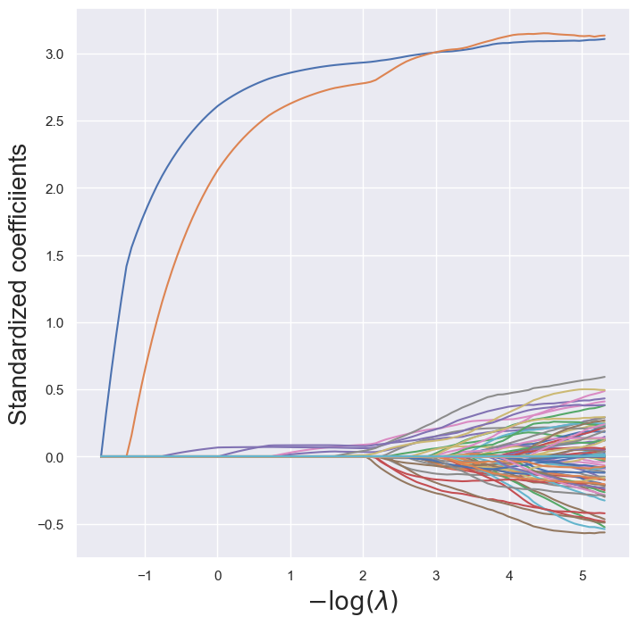
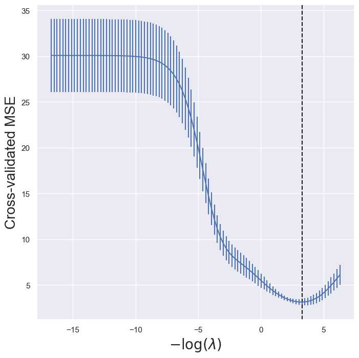

# import packages
import numpy as np
import pandas as pd
import seaborn as sns
import matplotlib
import matplotlib.pyplot as plt
from matplotlib import ticker, cm
from sklearn.linear_model import LinearRegression
from sklearn.linear_model import LogisticRegression
from scipy.interpolate import splrep, BSpline
from sklearn.decomposition import PCA
from mpl_toolkits.mplot3d import Axes3D
from matplotlib.pyplot import subplots
from sklearn.preprocessing import StandardScaler
from sklearn.pipeline import Pipeline
import sklearn
import warnings
warnings.filterwarnings('ignore')Lecture 1 - Intro
Linear Regression example
Specify parameters
n = 100
p = 1
beta = 3
sigma = 1Generate data
x = np.random.normal(size=(n, p))
y = x * beta + np.random.normal(size=(n, 1)) * sigma
colnames = ['x' + str(i) for i in range(1, p+1)]
colnames.insert(0, 'y')
df = pd.DataFrame(np.hstack((y, x)), columns = colnames)Fit linear regression model using sklearn
lm = LinearRegression()
lm.fit(x, y)
y_hat = lm.predict(x)
resid = y - y_hatPlot x vs. y using seaborn
sns.set_theme()
lm_plot = sns.relplot(df, x='x1', y='y', height = 3, aspect = 1.2)
plt.axline((0,lm.intercept_[0]), slope=lm.coef_[0][0])
Plot x vs. y, including residual distances
y_min = np.minimum(y, y_hat)
y_max = np.maximum(y, y_hat)
lm_plot = sns.relplot(df, x='x1', y='y', height = 3, aspect = 1.2)
plt.axline((0,lm.intercept_[0]), slope=lm.coef_[0][0])
lm_plot.ax.vlines(x=list(x[:,0]), ymin=list(y_min[:,0]), ymax=list(y_max[:,0]), color = 'red', alpha=0.5)Overfitting example
sort_ind = np.argsort(x, axis=0)
xsort = np.take_along_axis(x, sort_ind, axis=0)
ysort = np.take_along_axis(y, sort_ind, axis=0)
tck = splrep(xsort, ysort, s=20)
xspline = np.arange(x.min(), x.max(), 0.01)
yspline = BSpline(*tck)(xspline)
lm_plot = sns.relplot(df, x='x1', y='y', height = 3.5, aspect = 1.2)
plt.axline((0,lm.intercept_[0]), slope=lm.coef_[0][0], label = "Linear Regression")
plt.plot(xspline, yspline,color='orange', label = "Spline")
plt.legend(loc='upper left')
Shrinkage plot
Lasso example
This code is adapted from ISLP labs.
n = 100
p = 90
beta = np.zeros(p)
beta[0]=3
beta[1]=3
cov = 0.6 * np.ones((p, p))
np.fill_diagonal(cov, 1)
x = np.random.multivariate_normal(mean=np.zeros(p), cov=cov, size=n)
y = np.matmul(x, beta) + np.random.normal(size=n)
x_columns = ['x' + str(i+1) for i in range(p)]# set up cross-validation
K=5
kfold = sklearn.model_selection.KFold(K,random_state=0,shuffle=True)
# function to standardize input
scaler = StandardScaler(with_mean=True, with_std=True)lassoCV = sklearn.linear_model.ElasticNetCV(n_alphas=100, l1_ratio=1,cv=kfold)
pipeCV = Pipeline(steps=[('scaler', scaler),('lasso', lassoCV)])
pipeCV.fit(x, y)
tuned_lasso = pipeCV.named_steps['lasso']
tuned_lasso.alpha_
lambdas, soln_array = sklearn.linear_model.Lasso.path(x, y,l1_ratio=1,n_alphas=100)[:2]
soln_path = pd.DataFrame(soln_array.T,columns=x_columns, index=-np.log(lambdas))path_fig, ax = subplots(figsize=(8,8))
soln_path.plot(ax=ax, legend=False)
ax.set_xlabel('$-\log(\lambda)$', fontsize=20)
ax.set_ylabel('Standardized coefficiients', fontsize=20);
lassoCV_fig, ax = subplots(figsize=(8,8))
ax.errorbar(-np.log(tuned_lasso.alphas_),tuned_lasso.mse_path_.mean(1),yerr=tuned_lasso.mse_path_.std(1) / np.sqrt(K))
ax.axvline(-np.log(tuned_lasso.alpha_), c='k', ls='--')
ax.set_xlabel('$-\log(\lambda)$', fontsize=20)
ax.set_ylabel('Cross-validated MSE', fontsize=20);
Ridge regression
This code is adapted from ISLP labs
lambdas = 10**np.linspace(8, -2, 100) / y.std()
ridgeCV = sklearn.linear_model.ElasticNetCV(alphas=lambdas,
l1_ratio=0,
cv=kfold)
pipeCV = Pipeline(steps=[('scaler', scaler),
('ridge', ridgeCV)])
pipeCV.fit(x, y)Pipeline(steps=[('scaler', StandardScaler()),
('ridge',
ElasticNetCV(alphas=array([1.84404932e+07, 1.46137755e+07, 1.15811671e+07, 9.17787690e+06,
7.27331049e+06, 5.76397417e+06, 4.56785096e+06, 3.61994377e+06,
2.86874353e+06, 2.27343019e+06, 1.80165454e+06, 1.42778041e+06,
1.13149156e+06, 8.96687712e+05, 7.10609677e+05, 5.63146016e+05,
4.46283587e+05, 3.53672111e+05,...
1.53096214e-01, 1.21326131e-01, 9.61488842e-02, 7.61963464e-02,
6.03843014e-02, 4.78535262e-02, 3.79231012e-02, 3.00534091e-02,
2.38168128e-02, 1.88744168e-02, 1.49576525e-02, 1.18536838e-02,
9.39384172e-03, 7.44445891e-03, 5.89960638e-03, 4.67533716e-03,
3.70512474e-03, 2.93624800e-03, 2.32692632e-03, 1.84404932e-03]),
cv=KFold(n_splits=5, random_state=0, shuffle=True),
l1_ratio=0))])In a Jupyter environment, please rerun this cell to show the HTML representation or trust the notebook. On GitHub, the HTML representation is unable to render, please try loading this page with nbviewer.org.
Parameters
| steps | [('scaler', ...), ('ridge', ...)] | |
| transform_input | None | |
| memory | None | |
| verbose | False |
Parameters
| copy | True | |
| with_mean | True | |
| with_std | True |
Parameters
| l1_ratio | 0 | |
| eps | 0.001 | |
| n_alphas | 'deprecated' | |
| alphas | array([1.8440...84404932e-03]) | |
| fit_intercept | True | |
| precompute | 'auto' | |
| max_iter | 1000 | |
| tol | 0.0001 | |
| cv | KFold(n_split... shuffle=True) | |
| copy_X | True | |
| verbose | 0 | |
| n_jobs | None | |
| positive | False | |
| random_state | None | |
| selection | 'cyclic' |
lambdas, soln_array = sklearn.linear_model.ElasticNet.path(x, y,l1_ratio=0,alphas=lambdas)[:2]
soln_path = pd.DataFrame(soln_array.T,columns=x_columns, index=-np.log(lambdas))
path_fig, ax = subplots(figsize=(8,8))
soln_path.plot(ax=ax, legend=False)
ax.set_xlabel('$-\log(\lambda)$', fontsize=20)
ax.set_ylabel('Standardized coefficiients', fontsize=20);tuned_ridge = pipeCV.named_steps['ridge']
ridgeCV_fig, ax = subplots(figsize=(8,8))
ax.errorbar(-np.log(lambdas),
tuned_ridge.mse_path_.mean(1),
yerr=tuned_ridge.mse_path_.std(1) / np.sqrt(K))
ax.axvline(-np.log(tuned_ridge.alpha_), c='k', ls='--')
ax.set_xlabel('$-\log(\lambda)$', fontsize=20)
ax.set_ylabel('Cross-validated MSE', fontsize=20);
Logistic regression example
Generate data
n = 100
p = 2
x = np.random.uniform(-2, 2, size=(n, p))
beta = np.array([2.5, -2.5])
mu = np.matmul(x, beta)
prob = 1/(1 + np.exp(-mu))
y = np.zeros((n))
for i in range(n):
y[i] = np.random.binomial(1, prob[i], 1)[0]
df = np.hstack([y.reshape((n, 1)), x])
df = pd.DataFrame(df, columns = ['y', 'x1', 'x2'])
sns.set_theme()
logit_plot = sns.relplot(df, x='x1', y='x2', hue='y', style='y')
logit_plot.figure.subplots_adjust(top=.9)
Fitting the logistic regression model
log_fit = LogisticRegression()
log_fit.fit(x, y)
coeffs = log_fit.coef_[0]
coeff = -coeffs[0]/coeffs[1]Plot x_1\beta_1 + x_2\beta_2 = 0
logit_plot = sns.relplot(df, x='x1', y='x2', hue='y', style='y')
plt.axline([0,0], slope=coeff)
## title
logit_plot.figure.subplots_adjust(top=.9)
logit_plot.figure.suptitle(str(round(coeffs[0], 2)) + r'$x_1$ - ' + str(round(-coeffs[1], 2)) + r'$x_2 = 0$')
## fill in area
x_fill = np.linspace(-2, 2, num=200)
y_line = coeff * x_fill
logit_plot.ax.fill_between(x_fill, y_line, 2, color='blue', alpha=0.2)
logit_plot.ax.fill_between(x_fill, -2, y_line, color='orange', alpha=0.2)
logit_plot.ax.annotate(r'$\bf P(Y=1)<0.5$', (0.5, 2.1), color='blue')
logit_plot.ax.annotate(r'$\bf P(Y=1)>0.5$', (0.5, -2.2), color='darkorange')Text(0.5, -2.2, '$\\bf P(Y=1)>0.5$')
# Create a meshgrid for x1 and x2
x1_range = np.linspace(x[:, 0].min(), x[:, 0].max(), 200)
x2_range = np.linspace(x[:, 1].min(), x[:, 1].max(), 200)
X1, X2 = np.meshgrid(x1_range, x2_range)
# Compute the sigmoid function using the fitted logistic regression coefficients
Z = 1 / (1 + np.exp(-(log_fit.intercept_[0] + log_fit.coef_[0,0]*X1 + log_fit.coef_[0,1]*X2)))
fig = plt.figure(figsize=(5, 7))
ax = fig.add_subplot(111, projection='3d')
# Set background to white
ax.set_facecolor('white')
fig.patch.set_facecolor('white')
# Plot with smooth color transitions
surf = ax.plot_surface(X1, X2, Z, cmap='coolwarm', antialiased=True, linewidth=0, rstride=1, cstride=1)
ax.view_init(elev=15, azim=65+155)
ax.set_xlabel('x1')
ax.set_ylabel('x2')
ax.set_zlabel(r'P(y=1)')
ax.set_title(" "*115)
ax.text2D(0.5, 0.91, r'g(' + str(round(coeffs[0], 2)) + r'$x_1$ ' +
str(round(coeffs[1], 2)) + r'$x_2)$',
transform=ax.transAxes, ha='center', va='top')Text(0.5, 0.91, 'g(1.76$x_1$ -1.8$x_2)$')Principal Components Analysis
penguins = sns.load_dataset("penguins")
fig = plt.figure()
ax = Axes3D(fig)
fig.add_axes(ax)
cmap = matplotlib.colors.ListedColormap(sns.color_palette("Paired", 3))
cols = penguins['species'].copy()
cols[cols=='Adelie']=1
cols[cols=='Chinstrap']=2
cols[cols=='Gentoo']=3
sc = ax.scatter3D(penguins['bill_depth_mm'],
penguins['bill_length_mm'],
penguins['flipper_length_mm'],
c = cols,
cmap=cmap,
alpha=1)
ax.set_xlabel('bill depth')
ax.set_ylabel('bill length')
ax.set_zlabel('flipper length')
ax.set_facecolor((1.0, 1.0, 1.0, 0.0))
x = penguins[['bill_depth_mm', 'bill_length_mm', 'flipper_length_mm']]
x = x.dropna(axis=0)
pca_fit = PCA()
pca_fit.fit(x)
z = pca_fit.transform(x)
z_df = pd.DataFrame(z[:, 0:2], columns = ['z1', 'z2'])
z_df['species']=penguins['species']
sns.set_theme()
pca_plot = sns.relplot(z_df, x='z1', y='z2', hue='species', palette=sns.color_palette("Paired", 3), height=4)
PC_values = np.linspace(1,3,3).reshape(3,1)
scree_df = np.hstack([PC_values, pca_fit.explained_variance_ratio_.reshape(3,1)])
scree_df = pd.DataFrame(scree_df, columns = ['Principal Components', 'Explained Variance Ratio'])
scree_plot = sns.relplot(scree_df, x='Principal Components', y='Explained Variance Ratio', marker='o', kind='line', height=4)